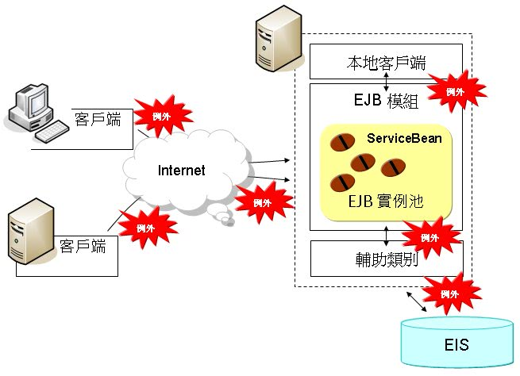
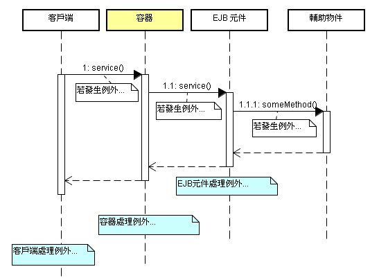
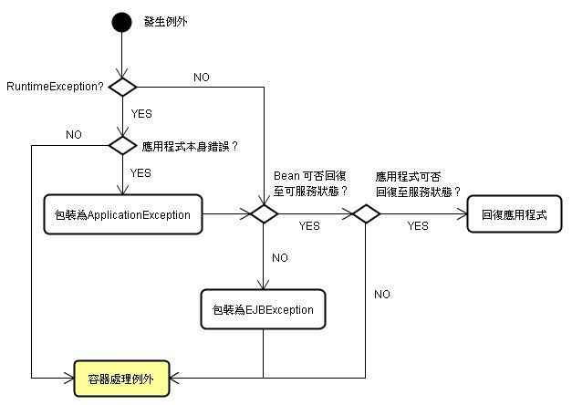

由 於Java EE程式本身可能是分散式，由多個模組、多個客戶端組成、多個系統組成，程式的例外發生點可能是遠端客戶端、應用程式本地客戶端、應用程式本身、呼叫的輔 助類別或因底層EIS（Enterprise Information System）互動而引發的錯誤，下圖顯示互動而發生例外時可能的傳播接點：

就遠端客戶端來說，多了一層例外可能發生的接點，即可能在呼叫服務未到達伺服端時，就因網路等問題而引發例外（上圖客戶端與Internet之間），或者 收到伺服端容器因某些元件或後端系統錯誤，導致服務呼叫失敗而被包裝成最後的EJBException（上圖Internet與伺服端之間）。
可以將客戶端、容器與元件的關係簡化為下圖，則處理例外的三個位置可能為客戶端、容器或EJB元件：

對於EJB來說，可以在例外傳播至容器前先加以處理，建議的處理流程如下：

對於容器來說，如果EJB元件丟出的是Application Exception，則容器會將例外直接傳回給呼叫者，如果是System Exception，則藉由丟出EJBException（RuntimeException 子類）、NoSuchEJBException等例外丟出通知呼叫者。。
客戶端可能是單機程式、Servlet、另一個EJB，客戶端必須處理傳回的例外，也許僅是簡單的顯示錯誤訊息給使用者。